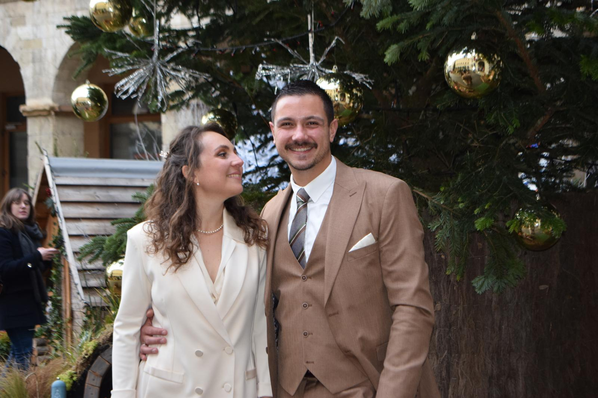

Justine
& Yvan
Voilà maintenant 10 ans que notre histoire a commencé.
10 années à grandir ensemble,
à rire, voyager, partager,
construire et rêver à deux.
Des milliers de souvenirs plus tard,
nous avons décidé d’en créer un nouveau,
et certainement l’un des plus beaux :
notre mariage.
Le programme
Cocktail
Domaine Le Gardien du Chai
543 chemin de la Varenne
42110 Salt-en-Donzy
Dîner
Au Domaine Le Gardien du Chai.
Soirée
Et ensuite… on danse.
D’un lieu à l’autre
574 route de Lyon
42110 Saint-Martin-Lestra
543 chemin de la Varenne
42110 Salt-en-Donzy